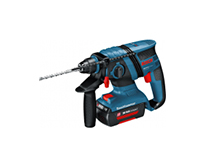

Перфораторы
Фильтр:
Цена:
- Аккумуляторные
- Сетевые
Сортировка:
-

Перфоратор BOSCH BFG 3000
22500 Р. 15500 Р. Купить В закладки -

Перфоратор BOSCH BFG 6000
30500 Р. 25500 Р. Купить В закладки -
Перфоратор BOSCH BFG 2000
12500 Р. Купить В закладки -
Перфоратор BOSCH BFG 3000
22500 Р. 15500 Р. Купить В закладки -
Перфоратор BOSCH BFG 6000
30500 Р. 25500 Р. Купить В закладки -
Перфоратор BOSCH BFG 2000
12500 Р. Купить В закладки -
Перфоратор BOSCH BFG 3000
22500 Р. 15500 Р. Купить В закладки -
Перфоратор BOSCH BFG 6000
30500 Р. 25500 Р. Купить В закладки -
Перфоратор BOSCH BFG 2000
12500 Р. Купить В закладки
Пара слов о перфораторах
Перфоратор — универсальный строительный инструмент. Предназначен для сверления и долбления отверстий в кирпиче, бетоне и камне.
Сущевуют электромеханические и пневматические перфораторы. Современные модели могут выполнять функции дрели, шуруповерта и отбойного молотка. В ассортиментном ряду есть выбор «трехрежимников»: в одном устройстве будут совмещены отбоый молоток и ударная дрель.